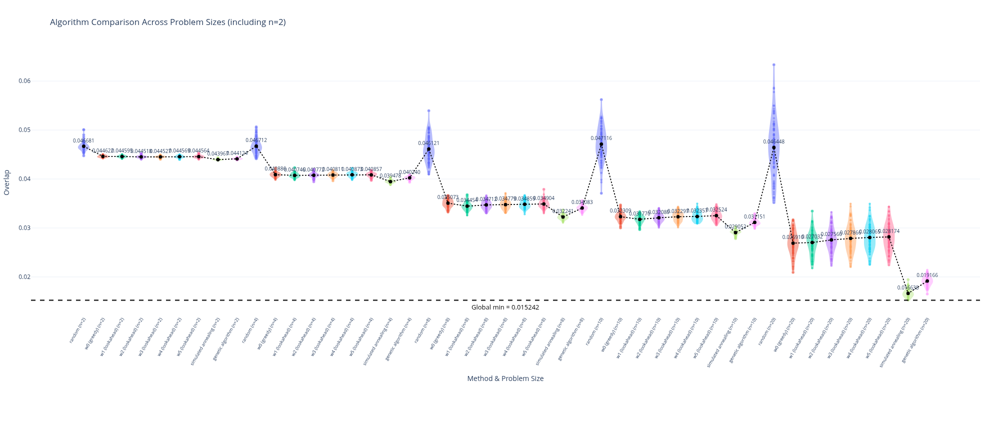
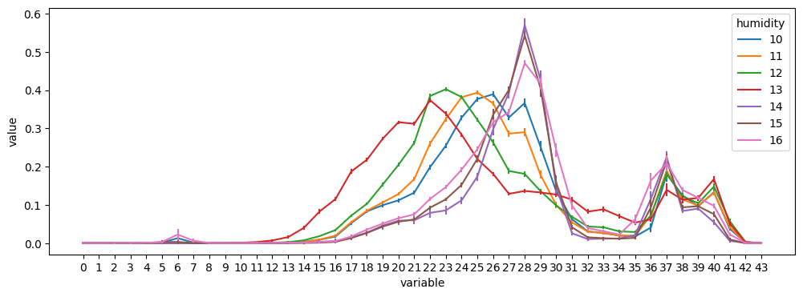
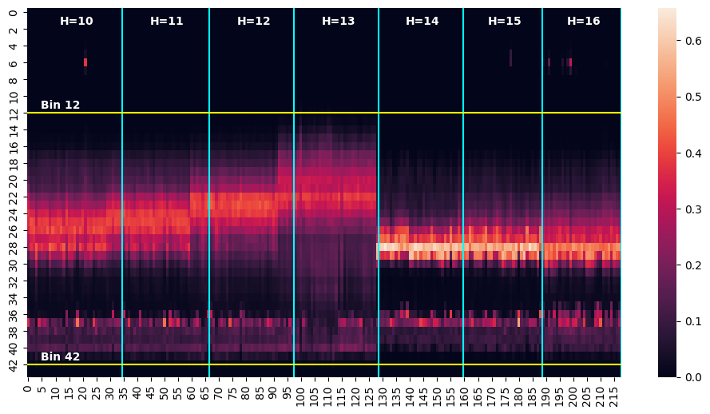
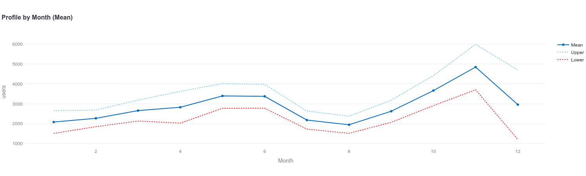
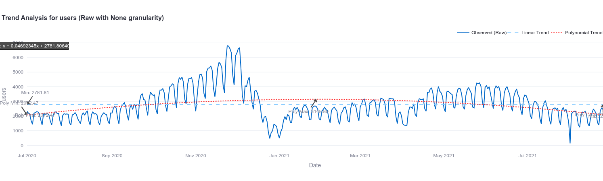
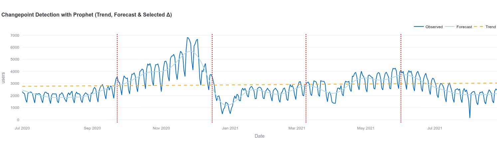
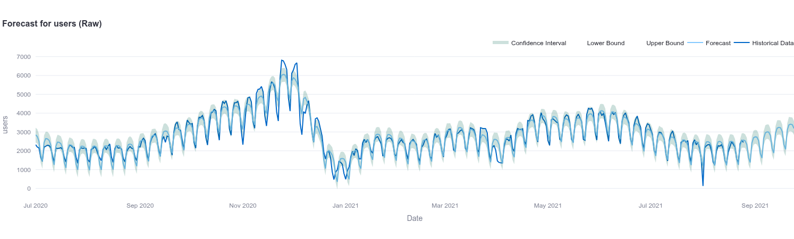
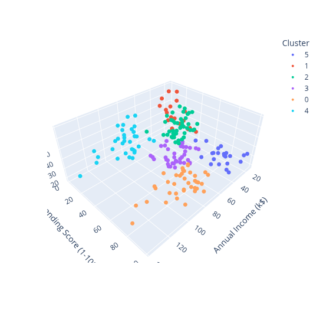

Best Practices for Data Science Modeling
This guide serves as a manual summarizing best practices for data science modeling, incorporating lessons learned from multiple robust data projects. The goal is to ensure models are statistically valid, reproducible, and immediately useful for business decision-making.
1. Exploratory Data Analysis (EDA)
EDA is a non-negotiable stage before modeling. It dictates your feature engineering strategy and helps you understand distributions, structural relationships, and potential modeling pitfalls.
Key Tasks
- Validate data quality and missingness
- Identify and handle outliers appropriately
- Detect multicollinearity and dependencies
- Explore temporal structures (if applicable)
Time Series EDA Techniques
- Trend and change-point detection
- Seasonality mapping
- Autocorrelation analysis (ACF/PACF)
- Stationarity testing
Recommended Visualizations
Violin Plot – Distribution Comparison
Violin plots are useful for comparing distributions across groups or experimental conditions. They combine kernel density estimation with boxplot features.

Line Plot – Temporal Profiles
Line plots help analyze patterns across conditions or time dimensions. In time series analysis, these plots reveal seasonal structure and trend shifts.

Heatmap – Density or Pattern Detection
Heatmaps are useful to visualize frequency patterns or temporal density distributions. For example, they can show how behavior changes across time or experimental conditions.

2. General Modeling Guidelines
Critical Priority: Prevent Data Leakage
Leakage occurs when information from the future or target variable contaminates your predictors. Always clearly define the prediction moment and ensure only features genuinely available at that exact time are used.
Define the Unit of Analysis
Determine the exact grain of your data before modeling. This dictates your feature engineering:
- Customer → Transaction
- Store → Week
- User → Session
Model Validation Strategies
Choose the validation method that matches your data structure:
- Cross-Validation (K-fold): Standard independent data.
- Time-Series Validation: Sequential rolling windows for temporal data.
- Out-of-Time (OOT): Ultimate test for production readiness.
Handling Class Imbalance
Many real-world problems (fraud detection, churn, predictive maintenance) feature heavy class imbalances. Do not rely on baseline Accuracy.
- Algorithmic adjustments: Class weights, Custom cost functions.
- Data adjustments: SMOTE (oversampling the minority) or undersampling the majority.
- Target Metrics: Optimize for
ROC-AUC, Precision/Recall, F1-score, or Precision@K depending on the business cost of False Positives vs. False Negatives.
3. Classification Models
Used to predict categorical outcomes (e.g., Customer churn, Lead conversion, Fraud detection).
Statistical Models
When to use: When interpretability and strict regulatory compliance are more important than pure predictive power.
- Logistic Regression: Estimates the probability of a binary outcome using a logistic curve. Highly interpretable baseline model.
- Naive Bayes: A probabilistic classifier based on Bayes' theorem, relying on the (often naive) assumption that features are independent.
- Linear Discriminant Analysis (LDA): Finds a linear combination of features that separates classes by maximizing the variance between them and minimizing variance within them.
Machine Learning Models
When to use: When dealing with high-dimensional data, complex nonlinear relationships, and raw predictive performance is the goal.
- Gradient Boosting (XGBoost, LightGBM): An ensemble method that builds decision trees sequentially, with each new tree correcting the errors of the previous ones.
- Random Forest: An ensemble technique that trains multiple independent decision trees on random subsets of data and features, merging them via majority vote to prevent overfitting.
- Support Vector Machines (SVM): Finds the optimal hyperplane in an N-dimensional space that distinctly classifies the data points with the maximum margin.
4. Regression Models
Used to predict continuous numerical variables (e.g., Sales prediction, Price estimation, Lifetime Value).
Statistical Models
- Linear Regression (OLS): Models the linear relationship between a dependent variable and one or more independent variables by fitting a straight line that minimizes squared errors.
- Ridge & Lasso Regression: Extensions of linear regression that add a penalty (L2 for Ridge, L1 for Lasso) to shrink coefficients, preventing overfitting and handling multicollinearity. Lasso can also perform feature selection.
- Generalized Linear Models (GLMs): A flexible generalization of linear regression that allows for response variables with error distribution models other than a normal distribution (e.g., Poisson for count data).
Machine Learning Models
- Random Forest Regressor: Averages the numerical predictions of numerous independent decision trees. Excellent for capturing non-linear relationships without manual feature transformations.
- Gradient Boosting Regressor: Sequentially builds trees to minimize a continuous loss function (like Mean Squared Error). Highly dominant in tabular data competitions.
- Deep Neural Networks: Uses multiple layers of interconnected nodes to learn complex, non-linear mappings from inputs to continuous outputs. Best suited for massive datasets or unstructured data.
5. Time Series Modeling
Focuses on predicting future values based on sequential historical data (e.g., Demand forecasting, Inventory planning).
Statistical Models
- ARIMA / SARIMA: AutoRegressive Integrated Moving Average (with a Seasonal component). Models future values based on past values, past errors, and differencing to achieve stationarity.
- Exponential Smoothing (ETS): Forecasts using weighted averages of past observations, where the weights decay exponentially as the observations get older. Decomposes into Error, Trend, and Seasonality.
- Prophet: An additive regression model developed by Meta that handles trend, seasonality, and holiday effects. It is robust to missing data and shifts in the trend.
Machine Learning Models
- Tree-based Models (XGBoost): Adapts standard ML by creating "lagged" variables (past values as current features) and rolling statistics to predict future steps using decision trees.
- LSTM Networks: Long Short-Term Memory networks are a type of Recurrent Neural Network (RNN) specifically designed to remember long-term dependencies in sequential data.
- Temporal Convolutional Networks (TCN): Uses dilated, causal 1D convolutions to handle sequences. They are often faster to train and possess a longer memory range than standard LSTMs.




6. Clustering Models (Unsupervised Learning)
Clustering involves grouping unlabeled data based on inherent similarities. It is highly exploratory and often used for customer segmentation, anomaly detection, or as a preprocessing step for supervised learning.
Common Algorithms
- K-Means: Fast, centroid-based model. Best for creating spherical clusters of similar size. Requires specifying the number of clusters (K) in advance.
- DBSCAN: Density-based spatial clustering. Excellent for identifying clusters of arbitrary shapes and isolating noise/outliers. Does not require specifying K.
- Hierarchical Clustering: Builds a tree-like structure (dendrogram). Great for understanding the taxonomy of your data, especially with smaller datasets.
Evaluation Metrics
Since clustering lacks "true" labels, evaluation relies on measuring cluster cohesion (how tight they are) and separation (how far apart they are):
- Silhouette Score: Measures how similar an object is to its own cluster compared to other clusters (Ranges from -1 to 1; closer to 1 is better).
- Elbow Method: A visual diagnostic to find the optimal K in K-Means by plotting the Within-Cluster Sum of Squares (WCSS).
- Davies-Bouldin Index: Calculates the average similarity ratio of each cluster with its most similar cluster (Lower scores indicate better separation).

Final Recommendations
- Validate Assumptions: Check for normality, homoscedasticity, or stationarity before applying models that require them.
- Business Context First: Prioritize interpretability when models directly inform human business decisions.
- Pipeline Documentation: Document the entire ETL and modeling pipeline to ensure reproducibility of results.
7. Sources & References
This guide was compiled using course materials, documentation, and lessons from the following resources:
"Good modeling is not only about predictive accuracy, but also about reliability, interpretability, and applicability in real-world decision-making."